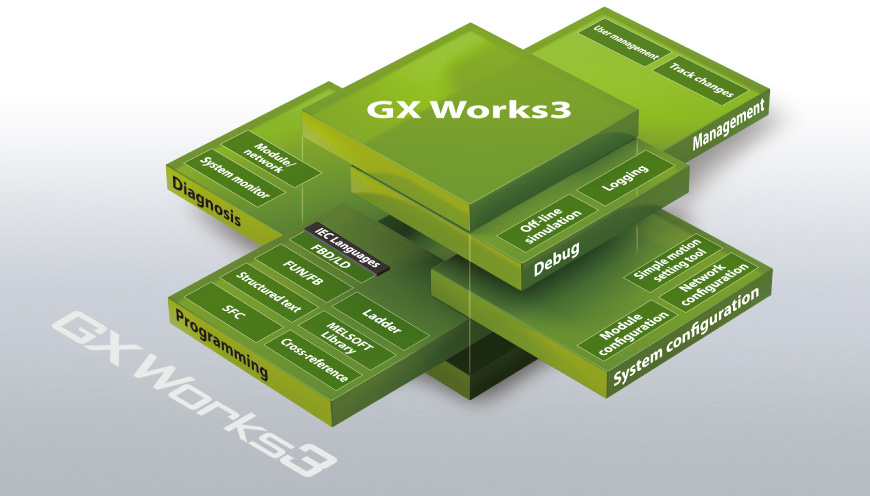
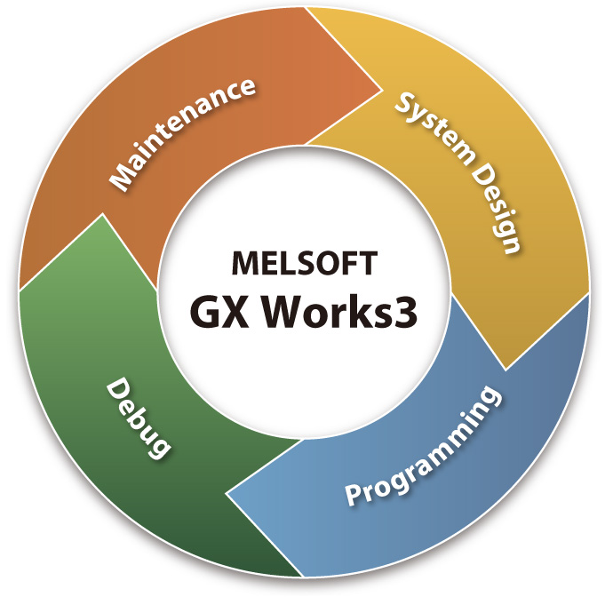
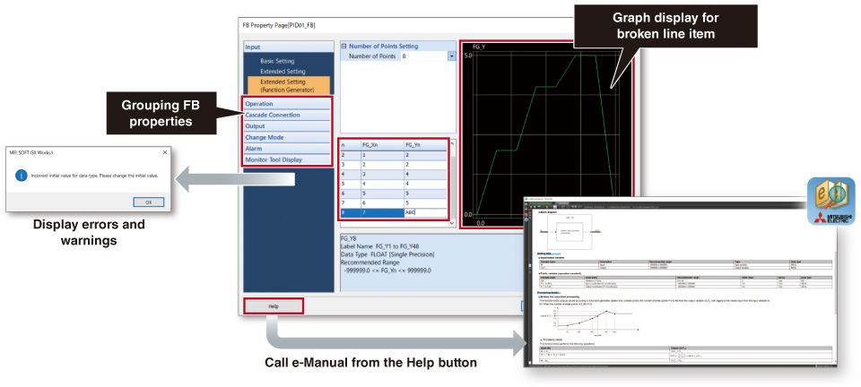
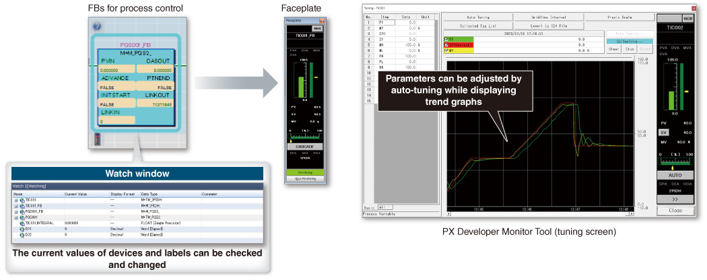

Process Control/Redundant Engineering

GX Works3 (MELSEC iQ-R Series)
One Software, Many Possibilities
GX Works3 consists of various different components that help to simplify project creation and maintenance tasks. A system design console that enables projects to be created at the system overview stage has been added. Additionally, the main programming languages are supported and their labels (variables) are shared, further simplifying programming. Various debug and maintenance features are also included.

Project lifecycle engineering
Various features have been consolidated into an integrated engineering environment that enables easier project creation throughout the engineering process, ensuring consistency through every step.
System-wide design
- Easy system configuration with parts library
- Direct module parameter registration
- Integrated simple motion module setup
Multiple programming languages
- Complies with IEC 61131-3
- Supports main programming languages
- Consistency between different programming tabs
Simple to debug
- Various online monitoring
- Hardware simulator (emulator)
- Data logging
Straightforward maintenance
- System monitoring
- Module and network diagnostics
- Multi-language commenting

Build a process control system with easy programming
- Engineering software GX Works3 provides an intuitive programming environment where process control programs can be easily created by connecting function blocks such as Tag FBs for process control on the screen by drag & drop operation
- The FB property page allows visual parameter setting of Tag FBs for process control
Easy programming with process control FBs

Simple settings using FB property page

*Supports Tag FBs provided by all manufacturers and user-defined Tag FBs.
- Tag FBs for process control simplify system startup adjustments by enabling monitoring on the faceplate, trend display on PX Developer Monitor Tool, and parameter setting through auto-tuning
Monitoring and tuning of process control FBs

- Ladder, function block diagram (process control programming), sequential function chart, and structured text are supported